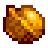

Nuez de oro
| Nuez de oro | |
|  | |
| Para los loros de Isla Jengibre, esta nuez es el más exquisito manjar. | |
| Información | |
| Origen | Agricultura • Minería • Recolección • Combate • Pesca • Arando • Rompiendo Coco dorado |
| Ubicación | Isla Jengibre • Herrería |
La Nuez de oro son la moneda de cambio de los loros en Isla Jengibre. La cantidad de nueces doradas que un jugador ha guardado se muestra directamente debajo de la imagen del jugador en la pestaña de habilidades.. Las nueces se comparten entre los jugadores en el modo Multijugador.
El jugador puede encontrar un total de 130 nueces doradas esparcidas por la isla, explorando, matando monstruos, cultivando, pescando, minando, rompiendo cajas etc. en el Mazmorra del volcán.
Una vez que un archivo guardado registra que se obtuvieron 100 nueces doradas (en total) se desbloqueará la Habitación de nueces del Señor Qi
Pistas del Loro
El loro en la casa de Leo gritará pistas sobre ubicaciones de las nueces cuando interactúe con él. Si se nombran cantidades, cambiarán a medida que el jugador las encuentre.
- Montaña de fuego... Escondidas en un río de fuego...
- Enterradas junto a huesos...
- Ayudar al hombre en la tienda...
- [Cantidad] bajo tierra al norte...
- [Cantidad] bajo tierra al oeste...
- [Cantidad] bajo tierra al sur...
- [Cantidad] en un escondite en el norte...
- [Cantidad] en un escondite al oeste...
- Abultada muy cerca...
- Babas con rayas al oeste...
- [Cantidad] atascada en las piedras y conchas de la costa...
- [Cantidad] creciendo en la granja al oeste...
- [Cantidad] profundamente bajo el agua...
- [Cantidad] ocultándose junto a los tesoros de la montaña...
- [Cantidad] en los aparatos de la montaña...
- [Cantidad] en piedras nuez en la montaña...
- [Cantidad] en manos de los monstruos de la montaña...
- Escondidas en las hojas del diario...
- [Cantidad] bajo tierra... la cueva del pirata...
- Bañándose en el corazón de la estrella...
- Sobre la montaña ardiente
- Kribbit... Gurrrp...
- Altar escondido en la jungla...
- Dentro de algo duro y dorado...
Ubicaciones de nueces
| Todas las ubicaciones |
|---|
Todas las ubicaciones creado por renya333 [1] |
| Generales (Todas) | |||
|---|---|---|---|
| Cantidad | Tipo de descubrimiento | Como encontrar | Imagen |
| 1 | Coco dorado | Cualquier Coco dorado, que se encuentra en cualquier lugar en Isla Jengibre, se pueden llevar a la Herrería en Stardew Valley para abrirlos. La primera vez que Clint abre uno, producirá una nuez de oro. |  |
| 5 | Pescar | Se puede obtener un máximo de cinco nueces doradas pescando en cualquier lugar de Isla Jengibre[1]. |  |
| Este de la isla | |||
|---|---|---|---|
| Cantidad | Tipo de descubrimiento | Como encontrar | Imagen |
| 1 | Exploración | Una nuez en un arbusto se encuentra en la jungla en el camino hacia la choza de Leo. |  |
| 3 | Rompecabezas | Coloque un Plátano en el altar junto a la escalera de la cabaña de Leo. Aparece un gorila y recompensa al jugador con 3 nueces. |  |
| 1 | Rompecabezas | Golpea el árbol dentro de la choza de Leo con un hacha.. |  |
| 1 | Exploración | Sigue el camino oculto en la jungla en el área principal de la Isla Este para encontrar el santuario pájaros gema. Encontrará una nuez al sur de esta área. |  |
| 5 | Rompecabezas | En la parte superior derecha de la jungla hay un camino escondido. Siguiendo el camino de piedra desde las escaleras de la casa de Leo se llega a un santuario oculto con cuatro estatuas de pájaros. Cada estatua de pájaro está asociada con un área particular de la Isla Jengibre, como lo indica la imagen tallada en su base (volcán = norte, olas = sur, palmera = este, corazón = oeste). En los días de lluvia, un pájaro gema aparecerá en una de las áreas de la isla (norte, sur, este u oeste). Si se acerca al pájaro gema, se alejará volando y dejará caer una piedra preciosa. El jugador debe colocar esta piedra preciosa en su altar correspondiente. Los pájaros gema siempre aparecerán en los mismos lugares:
Hay cinco gemas posibles: Amatista, Aguamarina, Esmeralda, Rubí, y Topacio. El santuario se activará y recompensará al jugador con 5 nueces una vez que se coloque la piedra preciosa final. (Nota: la solución del rompecabezas es aleatoria por juego). ((Nota: las aves de gemas seguirán apareciendo en los días de lluvia incluso después de que se resuelva el rompecabezas). |
 |
| Oeste de la isla | |||
|---|---|---|---|
| Cantidad | Tipo de descubrimiento | Como encontrar | Imagen |
| 5 | Cosechando | La recolección de cultivos en la granja de Isla Jengibre ocasionalmente producirá nueces, hasta un total de 5. |  |
| 15 | Rompecabezas | La Rana Goloso te pedirá que cultives un Melón, un Trigo, y luego un Ajo en orden. Hable con él después de cultivar completamente la cosecha solicitada para mostrarle la cosecha y recibir 5 nueces por cosecha, para un total de 15. (Nota: Los tres cultivos se pueden plantar al mismo tiempo, pero no se pueden cosechar hasta que la rana los haya visto). |
 |
| 1 | Restos de un diario #6 | Vaya hacia el sur desde la granja hasta la playa; verá una palmera curva en el acantilado más a la derecha. Cava en la esquina donde este acantilado derecho se encuentra con el acantilado que se extiende hacia la granja. También aparecerá una Perla. |  |
| 5 | Minería | Minando las Piedras de mejillones ocasionalmente producirá nueces, hasta un total de 5. | |
| 1 | Exploración | Encuentra el camino oculto en el borde izquierdo del naufragio directamente debajo de la granja y síguelo hasta el interior del barco. Hay una nuez en una planta adentro. |  |
| 1 | Rompecabezas | Atrapa a la criatura "Golpea a un topo verde" cubriendo tres de los agujeros con objetos que se puedan colocar y luego golpeándola con un Hacha o un Pico. También puede usar una regadera mejorada para golpear el topo. | |
| 1 | Exploración | Encuentra el triángulo de estrella de mar azul como se muestra en la imagen en la playa al sur de la granja. Usar una azada en el centro. |  |
| 1 | Exploración | Encuentre el diamante estrella de mar como se muestra en la imagen cerca de las piscinas de marea. Puede estar parcialmente cubierto por una gran roca. Usar la azada en el centro. |  |
| 1 | Exploración | Encuentra la X marcada en la arena de los charcos de marea. Usar la azada en el centro. | |
| 1 | Exploración | Encuentra un diamante con muescas en la arena en la parte inferior izquierda de las piscinas de marea, cerca del océano. Usar la azada en el centro. |  |
| 1 | Exploración | Una nuez se encuentra detrás de un cocotero junto al estanque al oeste de la granja. | |
| 5 | Misión | Completa la misión "La esposa del pirata" para recibir 5 nueces como parte de la recompensa. |  |
| 1 | Restos de un diario #4 | Excava en la arena al norte de la choza de Birdie. También aparecerá un Corcho de calidad. | |
| 1 | Exploración | Camine por la costa occidental hacia la Habitación de nueces del Señor Qi para encontrar un arbusto de nueces en la parte inferior derecha cerca de un acantilado. | |
| 1 | Exploración | Camine más allá de la Habitación de nueces del Señor Qi a través del agua del océano para encontrar un arbusto de nueces |  |
| 1 | Luchando | Matar las babas en Arbolada de Babas tigres puede darte hasta una nuez. |  |
| 1 | Exploración | Una nuez se encuentra detrás de un árbol de caoba en la arboleda de babas tigre. | |
| 1 | Exploración | Encuentra un círculo de hierba en la arboleda de limo de tigre; puede estar escondido detrás de un Árbol de caoba. Usar la azada en el centro. |  |
| 1 | Exploración | Un arbusto de nueces se encuentra a la izquierda sobre el puente del Loro Express ubicado en la granja. Estará parcialmente oculto por una repisa. |  |
| 3 | Rompecabezas | Completa el rompecabezas del Simon dice en la cueva al norte de Arbolada de Babas tigres para recibir 3 nueces. La imagen muestra las direccion del Loro Express ubicado en la granja. |  |
| 1 | Exploración | Ve hacia el este desde la arbolada de Babas tigres y sigue el borde del acantilado, destruyendo cualquier roca o maleza en tu camino. Llegarás a una nuez. |  |
| 1 | Exploración | Encuentra un diamante de guijarros a la derecha del Loro Express que está ubicado en la granja. Luego usar la azada en el centro. |  |
| 1 | Exploración | Ir a la derecha del Loro Express que está ubicado en la granja. Encontrará un camino oculto: seguir el camino hasta su destino lo llevará a un arbusto de nueces. |  |
| 1 | Exploración | Ir al sur desde el Loro Express que está ubicado en la granja. Caminando por el borde más a la izquierda. Aparecerá en el acantilado de atrás de la casa de campo, lo que le permitirá recoger la nuez. |  |
| Norte de la isla | |||
|---|---|---|---|
| Cantidad | Tipo de descubrimiento | Como encontrar | Imagen |
| 1 | Exploración | Al subir por la entrada del sur, gire a la izquierda y excave en el centro del círculo de piedra. |  |
| 1 | Exploración | Al subir por la entrada del sur, girar a la izquierda, pasar por un camino escondido para llegar a un bosquecillo con una nuez. | |
| 1 | Exploración | Al subir por la entrada del sur, gire a la derecha y excave en el centro de un círculo de flores. |  |
| 1 | Exploración | Al subir por la entrada del sur, gire a la derecha y excave en el centro del círculo de piedra. |  |
| 1 | Exploración | Excave arena con textura inusual debajo y a la derecha de la Oficina de campo de la isla. | |
| 1 | Exploración | Cuando esté en el lugar de excavación, suba la rampa y excave en el centro del círculo de piedra. |  |
| 1 | Exploración | Cuando esté en el sitio de excavación, suba la rampa y cruce el puente a la izquierda para encontrar una planta de nueces. | |
| 2 | Exploración | Cuando esté en el lugar de excavación, suba la rampa y gire a la derecha. Camine hacia el lado del acantilado para tomar el pasaje oculto hacia el puente (y dos plantas de nueces) más allá. |  |
| 6 | Oficina de campo de la isla | Completa la colección de un Animal inmenso en la Oficina de campo de la isla. |  |
| 3 | Oficina de campo de la isla | Completa la colección de Serpiente en la Oficina de campo de la isla. | |
| 1 | Oficina de campo de la isla | Donar una Rana momificada en la Oficina de campo de la isla. | |
| 1 | Oficina de campo de la isla | Donar un Murciélago momificado en la Oficina de campo de la isla. | |
| 1 | Oficina de campo de la isla | Termina la Encuesta de las flores moradas para obtener 1 nuez, el número correcto es 22. | |
| 1 | Oficina de campo de la isla | Termina la Encuesta de las estrellas de mar moradas para obtener 1 nuez, el número correcto es 18. | |
| 1 | Exploración | Camine desde la entrada del Mazmorra del volcán y excave en la arena rodeada por dos arbustos y un arco de piedras. | |
| 1 | Restos de un diario #10 | Dirígete hacia el suroeste desde la entrada de la Mazmorra del volcán hasta una palmera curva que crece en el costado del acantilado. Cava justo dentro del area de la palmera. También aparecerá un Huevo de avestruz. |  |
| 1 | Exploración | Dirígete hacia el suroeste desde la entrada de la Mazmorra del volcán hay una planta de nuez escondida por un árbol. | |
| 1 | Exploración | En la parte superior derecha de la entrada de la Mazmorra del volcán hay una nuez escondida en un árbol que se puede derribar con un tirachinas. |  |
| 1 | Exploración | Excava el centro del círculo de piedra en la parte superior izquierda del mapa donde a veces se encuentra Leo. | |
| 1 | Exploración | Una nuez se encuentra en la Mazmorra del volcán a través de un camino oculto en la parte superior izquierda. |  |
| 2 | Exploración | Cuando estés en el río de lava en la entrada de la Mazmorra del volcán, usa una Regadera para hacer un camino a la izquierda. Esto conducirá a una salida que se abre a un área con dos arbustos. |  |
| 17 | Minería | Mientras estés en la Mazmorra del volcán, puedes encontrar hasta 17 nueces doradas abriendo cofres, matando monstruos y minando. |  |
| 2 | Mazmorra del volcán | Al llegar a la Forja, habrá una planta de nueces junto a la entrada y salida de la forja. | |
| Sur de la isla | |||
|---|---|---|---|
| Cantidad | Tipo de descubrimiento | Como encontrar | Imagen |
| 1 | Exploración | Pase por la entrada a Norte de la isla, gire inmediatamente a la derecha y diríjase hacia el sur a través de una ruta oculta detrás de un árbol para acceder a la nuez visible en el acantilado superior en Sur de la isla. |  |
| 1 | Pescar | Vaya al Sureste de la isla, accesible después de construir el balneario. Pescar en la piscina de marea en forma de estrella de mar se conseguirá hasta una nuez. |  |
| 1 | Exploración | Vaya al Sureste de la isla, accesible después de construir el balneario. Encuentra un diamante de estrella de mar amarilla. Usar la azada en el centro. |  |
| 5 | Rompecabezas | En un día lluvioso, diríjase al Sureste de la isla,debajo de cada conjunto de piedras en la orilla, luego ajústelas según la cantidad de piedras que están sobre ellas. Una piedra grande simboliza el 5, mientras que una piedra pequeña simboliza el 1 ( (Aqui la solución). Una vez que los bloques se hayan ajustado correctamente, pase por ellos de izquierda a derecha. |  |
| 3 | Rompecabezas | En una noche no lluviosa después de las 8 pm en un día par, vaya a la Cueva pirata, accesible después de construir el balneario de playa. Ganar una ronda de dardos dará como premio una nuez hasta 3 veces. |  |
| 1 | Exploración | Ve a la Cueva pirata, accesible después de construir el balneario de playa. Habrá un parche de tierra expuesta entre los barriles al lado derecho del agua. Usar la azada en el centro. |  |
Canjear recompensas
Las nueces se pueden intercambiar con los loros por varios premios. Se necesitan 116 nueces para desbloquear todas las recompensas, lo que permite intercambiar 14 nueces restantes por 28 Gemas Qi.
| Recompesa | Descripción | Ubicación | Costo |
|---|---|---|---|
| Norte de la Isla Jengibre | Desbloquea el acceso al lado norte de la isla | Casa de Leo | |
| Oeste de la Isla Jengibre | Desbloquea el acceso al lado oeste de la isla | Sur de la Isla Jengibre | |
| La granja de la Isla Jengibre | Desbloquea la granja en el lado oeste de la isla, se puede usar para dormir y pasar el día sin salir de la isla. | Oeste de la Isla Jengibre | |
| Buzón de la granja | Permite que los jugadores accedan a su correo sin salir de la isla. | La granja de la Isla Jengibre | |
| Obelisco de granja | Permite a los jugadores teletransportarse de regreso a La granja, similar a un Tótem de viaje. | La granja de la Isla Jengibre | |
| Lugar de excavación de la isla | Repara el puente para acceder al sitio de Lugar de excavación de la isla. | Norte de la Isla Jengibre | |
| Comerciante isleño | Desbloquea la tienda del Comerciante isleño. | Norte de la Isla Jengibre | |
| Puente del volcán | Desbloquea un puente permanente hacia el volcán para que los jugadores ya no tengan que tener su regadera para entrar. | Entrada a la Mazmorra del volcán | |
| Atajo a la salida del volcán | Desbloquea un atajo de escape desde el nivel 5 de la Mazmorra del volcán, lo que permite un acceso rápido a Norte de la isla. | Nivel 5 de la Mazmorra del volcán | |
| Balneario de la isla | Desbloquea un balneario de la playa. Los NPC de la ciudad vendrán ocasionalmente a visitar el balneario . | Sur de la Isla Jengibre | |
| Loro Express | Desbloquea un sistema de viaje rápido para moverse rápidamente por la isla | Isla Jengibre | |
| Cambie las nueces restantes por Gemas Qi
(Solo disponible después de comprar todas las demás mejoras) |
Habitación de nueces del Señor Qi |
Loro Joja Dorado
Al Loro Joja Dorado se le puede pagar oro para encontrar todas las nueces doradas restantes que el jugador no ha encontrado. Se encuentra al oeste del volcán. Cuesta  10 000o por nuez no encontrada. Se advierte al jugador que hacer esto evitará que tenga la verdadera experiencia de la Isla Jengibre.
10 000o por nuez no encontrada. Se advierte al jugador que hacer esto evitará que tenga la verdadera experiencia de la Isla Jengibre.
Todas las nueces restantes se agregarán después de que el jugador se vaya a dormir por la noche.
Notas
El loro en la cabaña de Leo proporciona pistas para 123 de las 130 ubicaciones de nueces doradas con la excepción de las siguientes:
- 1 Nuez en el arbusto del sur en el área del santuario de aves gema.
- 3 Nueces por colocar un plátano en el altar del este, junto a la escalera de la cabaña de Leo
- Hasta 3 nueces recompensadas por ganar a los Dardos.
Errores
- Ocasionalmente, el juego puede contar mal la cantidad de nueces doradas obtenidas, dejando el conteo en 129/130, cuando en realidad se han encontrado todas las nueces. La solución es abrir una ventana de chat (con
?oTen PC) e ingresar /recountnuts. - Ocasionalmente, la Nuez dorada al norte de la entrada a la Habitación de nueces del Señor Qi, puede salir volando de la pantalla cuando se sacude (como la tapa de un Cubo de basura que explota, pero sin el sonido) y no se cuenta como recolectada, lo que hace que la Perfección sea imposible. La única solución (además de usar Mods) es salir y reiniciar el día.
Referencias
- ↑ Mirar IslandLocation::getFish en el código del juego.